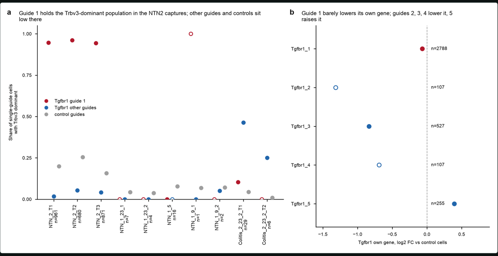
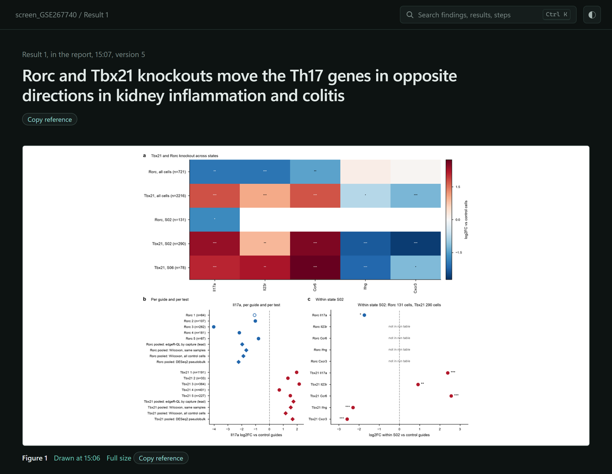
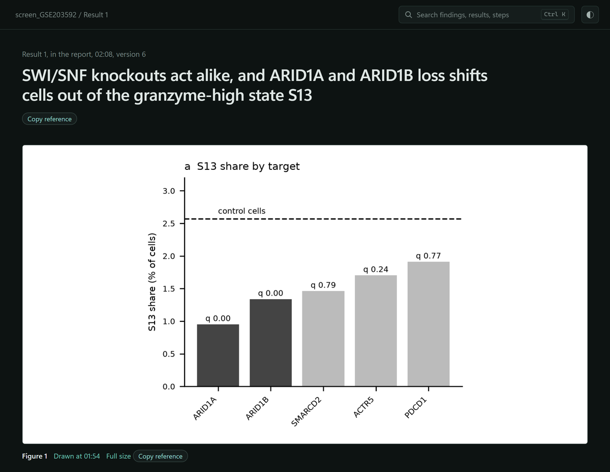

Perturb-seq analysis in Claude Code
An agent can analyse a Perturb-seq screen quickly. It can also compare the wrong groups of cells, attribute a signal from one guide to the gene, or report numbers that no run produced.
Pertura is a Claude Code plugin for traceable and reliable Perturb-seq screen analysis. First, Pertura confirms the experimental design with the user on control cells, replicates, perturbation types and conditions, which will affect the downstream analysis. Then the agent analyses the screen on the user's server, and Pertura records the code and output of every run. For findings about a gene, a gene set, a score or a cell state, Pertura repeats the test in each guide and against groups of control guides. A separate review agent reads each result with its runs and writes comments. Finally, every finding in the report links to its runs, checks and review comments, so the user can trace each number back to its code.
Pertura's capabilities
Design confirmation
A design auditor agent reads the deposited files and metadata and measures the design facts in the data. Pertura then shows the proposed design to the user on a form: the control cells, the replicates, the perturbation type and the conditions. The analysis tools run only after the user confirms the design.
Checks on each finding
The agent states each finding with its targets, its feature, its direction and its runs. The feature can be a gene, a gene set, a score or a cell state. Pertura then repeats the test in each guide, with other standard tests, on groups of control guides and in each half of the replicates. If a check cannot run, Pertura records the reason.
Automated review
After each turn, a separate review agent reads the new results with their runs and checks, and it records its doubts. The main agent then tests each doubt and records its answer.
Subagents for other choices
Some choices can change an answer, such as a threshold or a definition. For each of these choices, a subagent repeats the analysis with the common alternative, and the agent compares the two results.
A traceable report
Pertura keeps every run, finding, check, doubt and reply in one record. The report is built from this record. Each result has its figure, its statement with references to its runs, and its limits. The user decides which results go into the report.
A case study from a previous session
Here is a case study from a development session on 14 November 2026. In that session, Pertura analysed the public screen GSE267740, a knockout screen of 28 targets in mouse Th17 cells. The largest effect in the screen was a knockout of Tgfbr1. The agent's first reading of this effect changed twice before it went into the report.
- First reading. The agent records the Tgfbr1 signal as a clonal expansion in guide 1, not a knockout effect.
- Review comment. The review agent writes that a dominant Trbv gene does not prove a clone, because many clones share a Trbv gene and the data have no CDR3 sequences. One minute later, the agent narrows the claim to a Trbv3-dominant expansion carried by one guide in one experiment. At 15:02, it rewrites the finding after a check in each of the three NTN2 captures.
- A subagent checks each capture. It recomputes the share of Trbv3-dominant cells for guide 1, the other Tgfbr1 guides and the controls in each capture, and it draws the figure. At 15:19, its results change the wording again: the Tgfbr1 expression values for guides 2 to 5 differ from the earlier text, and one colitis capture shows Trbv3 enrichment in the other Tgfbr1 guides.
- The report. Result 2 describes a Trbv3-dominant population carried mainly by one guide in one experiment. In each of the three NTN2 captures, 94% to 96% of guide-1 cells with a Trbv transcript are Trbv3-dominant, against 16% to 26% of control cells from the same capture. Guide 1 barely lowers Tgfbr1 itself. Because the signal sits in one guide, it says little about a gene-level knockout effect.

The full session
Each mark is an event in the record of the session, from 13:10 to 15:21. The numbers 1 to 4 are the steps above. Hover over or tap a mark for a short excerpt. The complete record is in the report.
The interactive timeline needs JavaScript. The complete record is in the report.
Example reports
Each report shows the experimental design, the figures, the review comments and the analysis code of one session.

GSE267740, Th17 cells in kidney inflammation and colitis
A 28-target knockout screen in mouse Th17 cells. Result 1 finds that Rorc and Tbx21 knockouts move the Th17 genes in opposite directions. Result 2 is the Tgfbr1 case above.
View result 1
GSE203592, CD8 T cells
A nine-target knockout screen in mouse CD8 T cells. Result 1 finds that the SWI/SNF knockouts act alike, and that ARID1A and ARID1B loss moves cells out of a granzyme-high state.
View result 1These reports come from development sessions on public datasets. They include automated review comments. No human expert has reviewed their findings.
The Pertura system
A persistent workspace for Claude Code
The MCP server runs on the analysis server, and the plugin connects to it over SSH. It keeps a Python notebook open on the screen data, so variables and loaded data stay in memory between calls. The agent reaches the eleven analysis tools, R and other programs from this notebook.
A record of the analysis
The record is an event log on the analysis server. It keeps the design, every run with its code and output, every finding with its checks and earlier versions, every doubt with its answer, and the user's replies. A recorder writes the record from the conversation after each turn, so the agent does not spend its time on bookkeeping.
Knowledge from published screens
A knowledge base gives the agent cards on analysis choices, common pitfalls and follow-up analyses, with examples from published papers. The agent can also look up published Perturb-seq screens, protein complexes and gene sets, and search PubMed and bioRxiv. A second plugin reads published papers into the knowledge base.
A page on the user's computer
After each Pertura tool call, the plugin saves the figures and writes a page on the user's computer. The page shows the results with their figures, the findings with their checks and doubts, the design, the methods and every step of the session. It needs nothing installed.
Installation
The Claude Code plugin connects over SSH to an MCP server on the Linux machine that holds the screen data.
- On the analysis server, create the Conda environments from the files in
envs/specs/. SetPERTURA_BASEto the folder that contains the environments. - Prepare the reference data that the README lists.
- Generate the workspace configuration on the analysis server:
python -m pertura.mcp_server make-workspace-config <workspace folder> > workspace.json - In Claude Code, install the plugin from
plugin/. In the plugin settings, enter the analysis host, the Python of the server, the path of the repository on the server and the workspace configuration. - To start a session, type
/pertura.